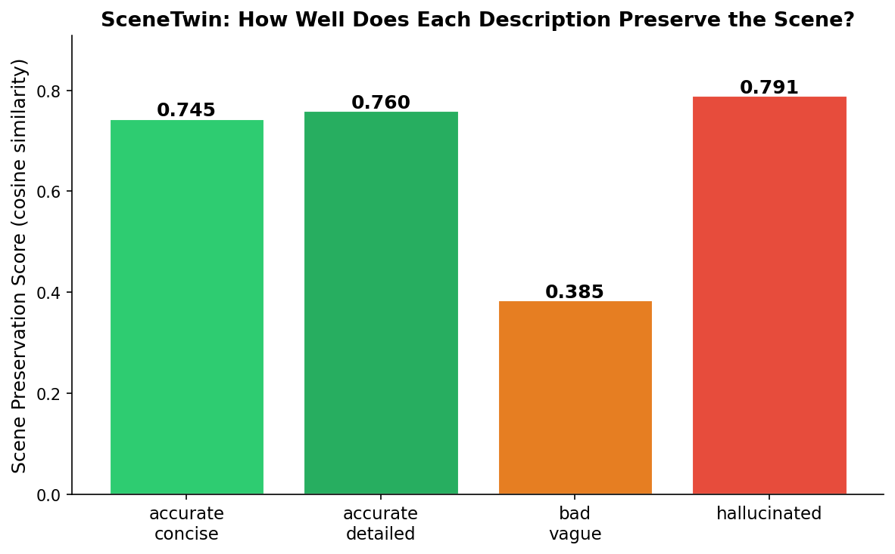

A scoring system for AI-generated audio descriptions of video.
TRIBE v2 checks predicted cortical alignment. CLIP checks visual grounding. Together, they catch vague and hallucinated descriptions.
A scoring system for AI-generated audio descriptions of video.
TRIBE v2 checks predicted cortical alignment. CLIP checks visual grounding. Together, they catch vague and hallucinated descriptions.
Blind and low-vision users rely on audio descriptions to access visual video content.
As AI generates these descriptions at scale, the risk is not just bad writing. The risk is a confident description of the wrong scene.
SceneTwin treats audio-description quality as a cross-modal alignment problem.
Predicts fMRI-like cortical response maps for video, audio, and text.
Checks whether the description is visually grounded in sampled video frames.
Rewards descriptions that are both rich and faithful to the actual scene.
A description must pass both tests: it must evoke a rich cross-modal response and actually match the scene.

| Description | TRIBE score |
|---|---|
| accurate concise | 0.7446 |
| accurate detailed | 0.7602 |
| bad vague | 0.3850 |
| hallucinated beach scene | 0.7908 |
TRIBE-only scoring detects descriptive richness, but vivid hallucinations can still score high.
| Description | CLIP grounding |
|---|---|
| accurate concise | 0.2525 |
| accurate detailed | 0.2931 |
| bad vague | 0.2335 |
| hallucinated beach scene | 0.1737 |
CLIP checks whether the words actually match the frames. The tropical beach hallucination does not match the snowy scene.
| Description | Final score |
|---|---|
| accurate detailed | 0.9245 |
| accurate concise | 0.5847 |
| bad vague | 0.0000 |
| hallucinated beach scene | 0.0000 |



These are current proof-of-concept renders. Poster version should use cleaner single-brain renders.
TRIBE predicts partially overlapping response patterns for videos and rich descriptions, and CLIP grounding catches scene mismatch.
SceneTwin measures actual blind-user experience or proves video and description produce identical brain activity.
A real audio description is added on top of the original soundtrack, not used alone.
This asks how much missing visual information the description restores beyond the original audio.
The dataset gives credibility because it studies naturalistic movie perception across sensory conditions.
Blind and low-vision users.
Video, audio, text, embeddings, cortical maps.
Prevent fluent but wrong accessibility content.
SceneTwin is a pre-screening layer for AI-generated descriptions before human accessibility review.
I’m building a quality-control metric for AI-generated audio descriptions. TRIBE checks whether a description evokes a similar predicted cortical response to the video, and CLIP checks whether the description is actually grounded in the frames. In the first test, TRIBE alone was fooled by a vivid hallucination, but the combined SceneTwin score ranked the accurate description highest and the hallucination lowest.